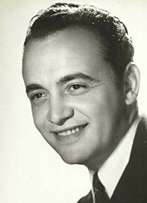

#4396 Sie nannten ihn Plattfuß
Alternativ: The Knock Out Cop (Englischer Titel)


 IMDB-Wertung: 6.8 / 10
IMDB-Wertung: 6.8 / 10  Metascore: 0
Metascore: 0 
Adventures of the police inspector "Flatfoot" Rizzo in the slums of Naples.
Jahr: 1973
Dauer: 107 Minuten
FSK: 12
Land: Studio: Constantin FilmTonspuren:
Untertitel: Deutsch,
Auflösung: 1080p (1920x1024) Größe: 7649 MB
Genre: Action, Komödie, Krimi, Drama
Regisseur: Steno
Drehbuch: Franco Castellano
Soundtrack:
Darsteller:
 Bud Spencer als Inspector 'Flatfoot' Rizzo
Bud Spencer als Inspector 'Flatfoot' Rizzo- Juliette Mayniel als Maria
- Vittorio Duse als Police officer
 Pietro Torrisi als Thug , uncredited
Pietro Torrisi als Thug , uncredited- Adalberto Maria Merli als Police Commissioner Tabassi
-  Raymond Pellegrin als Lawyer De Ribbis
- Mario Pilar als Antonino Percuoco 'Manomozza'
- Enzo Cannavale als Deputy Inspector Caputo
- Angelo Infanti als Ferdinando Scarano 'O'Barone'
- Jho Jhenkins als Jho - American soldier
- Salvatore Morra als Peppino 'Il gobbo'
- Franco Angrisano als Commissario
- Carla Mancini als Restaurant Guest
- Alessandro Perrella als
- Enzo Maggio als Gennarino
- Luciano Tacconi als
- Dominic Barto als Tom Ferramenti
 Nino Vingelli als Old Man of Camorra
Nino Vingelli als Old Man of Camorra- Alfonso Cavotti als Chief Concierge
- Enzo Maggio als Gennarino
- Ferruccio Amendola als Camorrista alla sala biliardo , uncredited
- Artemio Antonini als (uncredited
- Giancarlo Bastianoni als Manomozza's Thug , uncredited
 Omero Capanna als O'Barone's Thug , uncredited
Omero Capanna als O'Barone's Thug , uncredited- Ester Carloni als Assunta , uncredited
- Antonio Casagrande als Antonino Percuoco 'Manomozza' , uncredited
- Nestore Cavaricci als Mafioso , uncredited
- Giovanni Cianfriglia als Ship Thug , uncredited
- Dante Cleri als Owner of Disco , uncredited
- Roberto Dell'Acqua als Jho's Slim Pal , uncredited
- Sergio Fiorentini als Ferramenti's Thug , uncredited
- Ulla Johannsen als Blonde Woman in Bar , uncredited
- Giulio Maculani als (uncredited
- Gianni Marzocchi als Tom Ferramenti , uncredited
 Emilio Messina als (uncredited
Emilio Messina als (uncredited- Roberto Messina als (uncredited
- Franco Moruzzi als Getaway Driver , uncredited
- Glauco Onorato als Inspector 'Flatfoot' Rizzo , uncredited
 Nello Pazzafini als (uncredited
Nello Pazzafini als (uncredited- Osiride Pevarello als Thug with Beard , uncredited
- Mimmo Poli als (uncredited
- Aldo Rendine als School Caretaker , uncredited
- Giuseppe Rinaldi als Lawyer De Ribbis , uncredited
- Giacomo Rizzo als Il sarto di Ferdinando Scarano , uncredited
- Claudio Ruffini als Friend of Jho , uncredited
- Sergio Smacchi als (uncredited
- Carla Todero als Maria , uncredited
- Franco Ukmar als Manomozza's Thug , uncredited
- Marcello Verziera als Pusher / Ship Thug , uncredited
Datei: X:\Person\Bud Spencer + Terence Hill\Sie nannten ihn Plattfuß (1973, FSK12, 1920x1024).mkv seit 13.09.2016
Festplatte: HD Collection-7+mehr(A-Z)+Person
 Es gibt insgesamt 43 Filme in der Gruppe 'Person\Bud Spencer + Terence Hill'
Es gibt insgesamt 43 Filme in der Gruppe 'Person\Bud Spencer + Terence Hill'